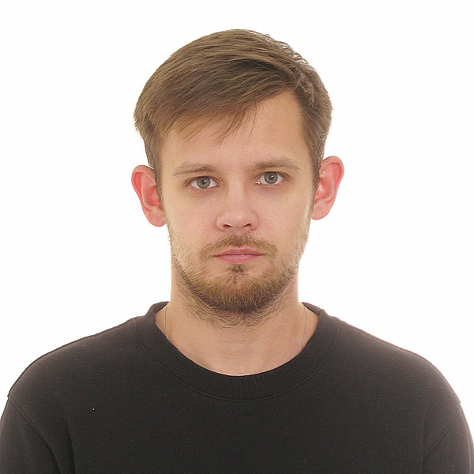

Nikita Pankov
MY CONTACTS
- Addres: 141, Barykina Street, Gomel, Repablic of Belarus
- Phone: +375 29 370 24 19
- Email: genozu@yandex.by
- Discord: Nikita Pankov(@Genozu)
ABOUTE ME
Responsible - Attentive - Highly Organized - Learner - Sociable:
- from 2014-2015 performed duties related to the repair of office equipment (computer, printer, plotera) in ODO "Office Satellite";
- in 2017 he worked as a sushi chef in Bonsai;
- from 2017-2018 he carried out work on the installation of gas equipment, heating, electrics;
- from 2018-2022 he worked as a civil engineer in a design organization, and also held the position of assistant to the chief project engineers in the organization of JSC "Giprozhivmash";
- from 2023 to the present day, I have been working as an engineer for construction solutions and inspection of buildings and structures.
EDUCATION
- Creative shool (school 19, Gomel, Repablic of Belarus 2000-2011);
- Civil engeneer (Belarusian State University of Transport 2011-2021);
- HTML and CSS basic (courses HTML Academy 2021);
- Python basics (courses hexlet october-december 2022);
SKILLS
- engineering programs: SCAD Office, AutoCAD, Revit;
- programming language: python;
- version control system: Git;
- development tools: Visual Studio Code.
Code example
Python:
# Function for checking tables in the DataBase
def table_verification(connection, name_table, data_column):
name = f"'{name_table}'"
query = "SELECT name FROM sqlite_master WHERE type='table';"
result = execute_read_query(connection, query)
print(result)
if (name_table,) in result:
print(f'Таблица {name_table} присутсвует!')
else:
print(f'Таблица {name_table} отсутсвует!')
create = create_table(name, data_column)
execute_query(connection, create)
LANGUAGES
- English - elementary (A1)
- Russian - native